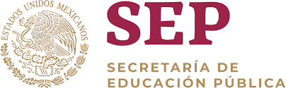
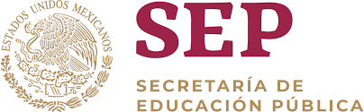
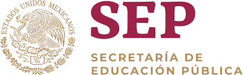

CENTRO DE BACHILLERATO TECNOLOGICO INDUSTRIAL Y DE SERVICIOS Num. 243
BIENVENIDOS Angel De Jesus Galvez Morales
 

CENTRO DE BACHILLERATO TECNOLOGICO INDUSTRIAL Y DE SERVICIOS Num. 243
BIENVENIDOS Angel De Jesus Galvez Morales

MISION
Formar personas con conocimiento
Tecnologicos en las areas individual,comercial y de servicios, a travezde la
preparacion de bachilleres y profesionales
tecnicos, con el fin de contribuir al desarrollo
sustenrable del pais.
VISION
Ser una institucion de Educacion Media
Superior, certificada, orientada al
aprendizaje y el desarrollo de conocimientos
Tecnologicos y Humanisticos.
HISTORIA
En el actual C. B. T .i. s. No. 243, que funciona en la ciudad de Motozintla, Chiapas, se
formo como una extensión del C. E. T. i. s . No. 136 del municipio de Frontera Comalapa,
teniendo en ese entonces las especialidades de “SUELOS Y FERTILIZANTES” Y
“CONTABILIDAD”, con una población estudiantil de 117 alumnos.
Se iniciaron las labores educativas, el día 05 de septiembre del año de 1988, en el turno vespertino, en la
Escuela Primaria Federal “NIñO ARTILLERO”. En el año de 1991 se continuaron las labores en la Escuela
Primaria del Estado “MOTOZINTLA”. En el mes de Octubre del año de 1992, se recibe la autorización para el
cambio de nombre del plantel y la clave del nuevo centro de trabajo:C.B.T.i.s. Número 243. CLAVE:
07DCT9911G.
Según información del Ing. José Luís Choy Romero y del Lic. Roberto Escobar G. quienes dieron a conocer los
antecedentes de esta Institución educativa y recalcaron, que varios de los alumnos que aquí han
egresado, hoy prestan sus servicios en estos planteles y destacaron además que, para la región de la sierra
madre es una institución muy bien aceptada debido a las carreras que aquí se imparten y que los alumnos
tiene un campo de trabajo debido a las carreras técnicas. Las instalaciones se han fortalecido y se ha
visto un grado mayor de avance en cuanto al número
de alumnos y de personal.
En la actualidad, el plantel cuenta con una población estudiantil de aproximadamente de 429 alumnos y 38
personas laborando en el área de docencia, administrativo y de intendencia.
La escuela ofrece las siguientes especialidades:
CONTABILIDAD, ENFERMERIA GENERAL y COMPUTACION.

A continuacion un video introductorio al CBTIS243
email de la institucion
cbtis243.dir@uemstis.sems.gob.mx